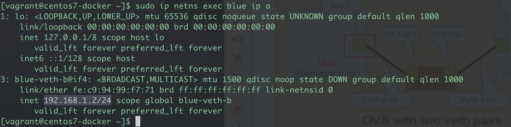

[Linux] 內核虛擬Bridge, veth原理與實作 | Hands on Linux Kernel: bridge, veth
▌前言
目的：實作linux bridge，實驗不同namespace之互通性
什麼是
Linux bridgelinux bridge是用於連接兩個不同網段的常見手法，不同網段通過bridge連接後，就如同在一個網段工作一樣。工作原理就是OSI Layer 2 Data link 進行數據包(frame)的轉發，當有數據到達時，Bridge 會根據報文中的 MAC 信息進行廣播、轉發或丟棄。完成bridge之後再透過指派IP給虛擬網卡，使二端可以互相ping通
什麼是
namespace它是Linux內核的一項功能，能夠對內核資源進行分區，以使一組process看到指定一組資源，而另一組process看到另一組資源，所以namespace是linux用來進行資源的虛擬隔離方法
什麼是
veth（virtual Ethernet）是Linux 內核支援的一種虛擬網絡設備，是虛擬的網路裝置，veth 的兩端可以採用不同的網路namespace，所以可以用來做主機和容器之間的網路通信。
▌建立namespace
- namespace是linux用來進行資源的虛擬隔離之用，
- 測試查看現有namespace，並新增一個namespace
- 採用新的namespace，並查看ip device
1 | # 列出現有的namespace, netns應為network namespace縮寫 |
2 | ip netns list |
3 | |
4 | # 增加一個blue namespace |
5 | ip nets add blue |
先列出現有的namespace，再來增加一個
blue namespace搭配
ip netns exec採用新的namespace
▌建立veth pair
- 由圖1所示，要讓namespace A連到local，我們就要建立一對veth
- 再來將這一對veth，各別放到新的namespace，另一個則保留不動
1 | # 建立一對veth(virtual-ethernet), 一個名字為a, 另一個為b |
2 | sudo ip link add blue-veth-a type veth peer name blue-veth-b |
3 | |
4 | # 查看local內新的veth 裝置 |
5 | ip link |
6 | |
7 | # 查看新的veth 裝置 |
8 | sudo ip netns exec blue ip link |
剛建立好的
veth pair預設會先在local端，還不會到新的namespace第一次看到的ip link 結果可以看
blue-veth-a,blue-veth-b皆存在第二次的ip link，有指定在
blue namespace，blue-veth-b就不會在default ip link出現
調動blue-veth-b
- 參考圖示，目的要測試新的namespace連線，因此將veth-b移動到
blue namespace - 透過veth-a, veth-b裝置的MAC 即可以相互通信
1 | # 因此將veth-b移動到blue namespace |
2 | sudo ip link set blue-veth-b netns blue |
3 | |
4 | # 從blue namespace查看新的veth-b裝置 |
5 | ip netns exec blue ip link |
6 | |
7 | # 把dev lo 這個置裝喚醒 |
8 | sudo ip netns exec blue ip link set dev lo up |
9 | |
10 | # 同時也把blue-veth-a, blue-veth-b 二個裝置喚醒 |
11 | |
12 | sudo ip link set dev blue-veth-a up |
13 | sudo ip netns exec blue ip link set dev blue-veth-b up |
可以看到原本的ip link 看不到
veth-b了，現在已經轉到blue namespace底下現在
veth-piar這條“鏈”已經建立起來了，代表L2數據鏈路是可以互通不過呢，我們還是缺少了L3 ip，所以我們會增加ip進去
▌測試namespace 連線
依圖示，現在要用紅色的blue-veth-b, 和藍色blue-veth-a分別加上ip
- 綠色方塊就是 = veth
- 橘色方塊就是local 端
1 | #1 指定dev blue-veth-a，使用ip addr add ip |
2 | sudo ip addr add 192.168.1.1/24 dev blue-veth-a |
3 | |
4 | ip a |
5 | |
6 | #2 指定dev blue-veth-b，使用ip addr add ip |
7 | sudo ip netns exec blue ip addr add 192.168.1.2/24 dev blue-veth-b |
8 | |
9 | sudo ip netns exec blue ip a |

依圖示，現在要用紅色的blue-veth-b, 和藍色blue-veth-a分別加上ip
veth-a ping veth-b
- 實際上的行為，原理是linux bridge交換
frames而已，都是等於是ping localhost - ping process發起
echo請求，請求到達異地端發起arp請求，詢問目的地址的mac地址 - 透過
arp得到ip與mac的對應方式，並根據mac將frame轉交給veth-b - 因為內核交換數據，所以非常快僅 0.03 ms
▌後記 / 結論
上面的實作是採local至一個指定namespace，另一個實驗是延伸二個namespace，如果有應用服務要跨二個namespace，就是依照veth-pair原理，把各別veth-a, veth-b放進指定的namespace即可
1 | #1 增加二個namespace, 分別為ns1, ns2 |
2 | [vagrant@centos7-docker ~]$ sudo ip netns add ns1 |
3 | [vagrant@centos7-docker ~]$ sudo ip netns add ns2 |
4 | |
5 | # 確認namespace |
6 | [vagrant@centos7-docker ~]$ ip netns list |
7 | ns2 |
8 | ns1 |
9 | blue (id: 0) |
10 | |
11 | #2 新建一對veth-pair |
12 | sudo ip link add ns1-veth-a type veth peer name ns2-veth-b |
13 | |
14 | # 分派至各別的namespace |
15 | sudo ip link set ns1-veth-a netns ns1 |
16 | sudo ip link set ns2-veth-b netns ns2 |
17 | |
18 | # 喚醒veth裝置 |
19 | sudo ip netns exec ns1 ip link set dev ns1-veth-a up |
20 | sudo ip netns exec ns2 ip link set dev ns2-veth-b up |
21 | |
22 | #3 指定IP |
23 | sudo ip netns exec ns1 ip addr add 10.0.0.1/16 dev ns1-veth-a |
24 | sudo ip netns exec ns2 ip addr add 10.0.0.2/16 dev ns2-veth-b |
25 | |
26 | # ping測試 |
27 | sudo ip netns exec ns1 ping 10.0.0.2 |
測試由ns1 中的veth-a 發起ping ns2 veth-b
References
- Udemy https://www.udemy.com/course/docker-china/learn/lecture/6944632#overview
- OVS blog https://sites.google.com/a/cnsrl.cycu.edu.tw/da-shu-bi-ji/openvswitch
- TAP, VETH http://puremonkey2010.blogspot.com/2015/05/linux-linux.html
- Linux Bridge https://www.twblogs.net/a/5b7eba432b717767c6ab6bb1
- https://www.itread01.com/content/1547012345.html